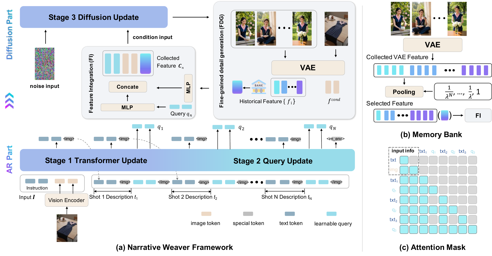
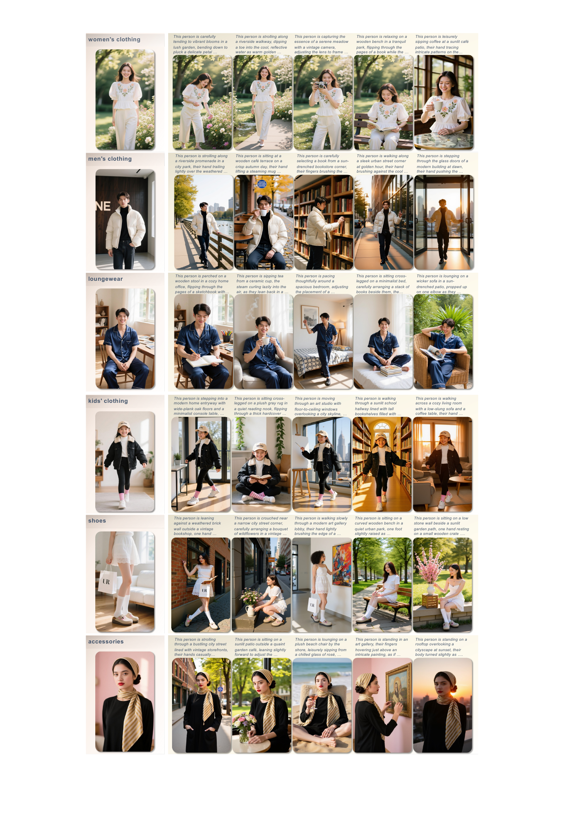
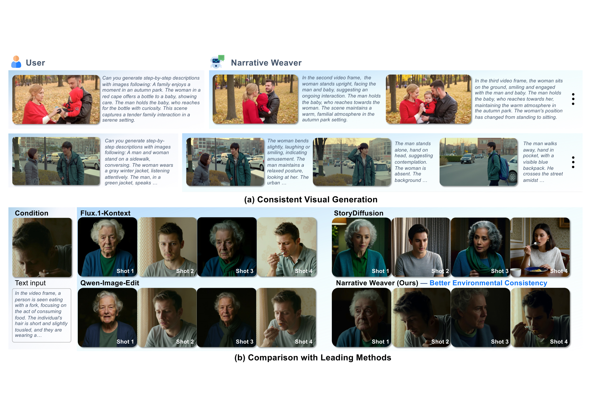
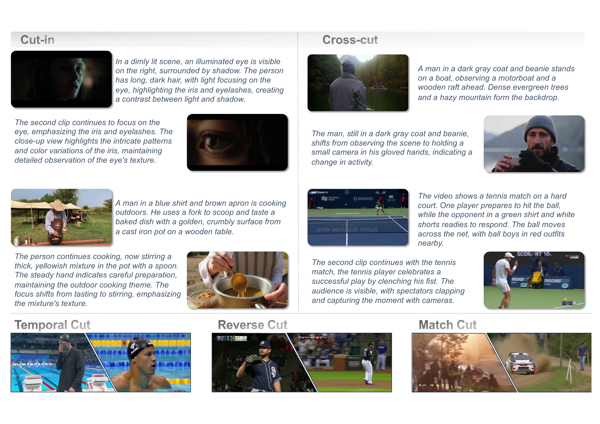
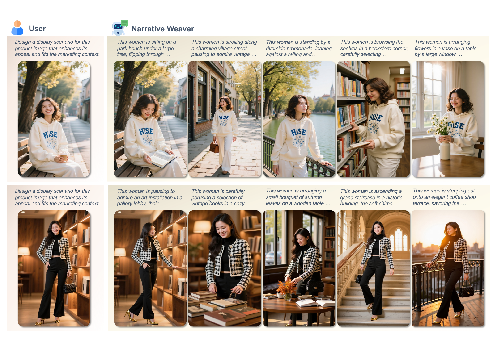

Abstract
We present Narrative Weaver, a novel framework that addresses a fundamental challenge in generative AI: achieving multi-modal controllable, long-range, and consistent visual content generation. While existing models excel at generating high-fidelity short-form visual content, they struggle to maintain narrative coherence and visual consistency across extended sequences—a critical limitation for real-world applications such as filmmaking and e-commerce advertising.
Narrative Weaver introduces the first holistic solution that seamlessly integrates three essential capabilities: fine-grained control, automatic narrative planning, and long-range coherence. Our architecture combines a Multimodal Large Language Model (MLLM) for high-level narrative planning with a novel fine-grained control module featuring a dynamic Memory Bank that prevents visual drift. To enable practical deployment, we develop a progressive, multi-stage training strategy that efficiently leverages existing pre-trained models, achieving state-of-the-art performance even with limited training data.
Recognizing the absence of suitable evaluation benchmarks, we construct and release the E-commerce Advertising Video Storyboard Dataset (EAVSD)—the first comprehensive dataset for this task, containing over 330K high-quality images with rich narrative annotations. Through extensive experiments across three distinct scenarios (controllable multi-scene generation, autonomous storytelling, and e-commerce advertising), we demonstrate our method's superiority while opening new possibilities for AI-driven content creation.
Method
Narrative Weaver is a hybrid Autoregressive (AR) + Diffusion framework. The AR part — an MLLM acting as a "director" — takes initial visual and textual context, plans future narrative logic in textual form, and condenses historical multi-modal information into a compact set of learnable queries. Fine-grained VAE-encoded features from condition images are fused with these queries and passed to the diffusion decoder. A dynamic Memory Bank anchors each generative step to the initial visual condition and prior frames, mitigating visual drift over long sequences.

EAVSD Dataset
We release the E-commerce Advertising Video Storyboard Dataset (EAVSD) — the first dataset providing (text, image) → (text, {imagei}i=1..N) triplets aligned with multi-scene storyboards. EAVSD contains over 330K high-quality images with rich narrative annotations, curated for e-commerce marketing where strict brand-level visual consistency is a commercial necessity.

Task 1 · Controllable Multi-Scene Generation
Given multi-modal conditions, Narrative Weaver generates multiple keyframes that remain strictly consistent in identity, style, and scene context across the whole sequence.

Task 2 · Autonomous Storyboard Planning
Narrative Weaver autonomously decomposes a high-level user instruction into a coherent storyboard, generating both the narrative text and visually consistent keyframes end-to-end.

Task 3 · E-commerce Advertising Storyboards
From a product image, a description, and a marketing goal, Narrative Weaver produces a brand-consistent advertising storyboard, demonstrating real-world potential for AI-driven content creation.

Video Demos
BibTeX
@article{yao2026narrativeweaver,
title = {Narrative Weaver: Towards Controllable Long-Range Visual Consistency with Multi-Modal Conditioning},
author = {Yao, Zhengjian and Li, Yongzhi and Gao, Xinyuan and Chen, Quan and Jiang, Peng and Lu, Yanye},
journal = {arXiv preprint arXiv:2603.06688},
year = {2026}
}